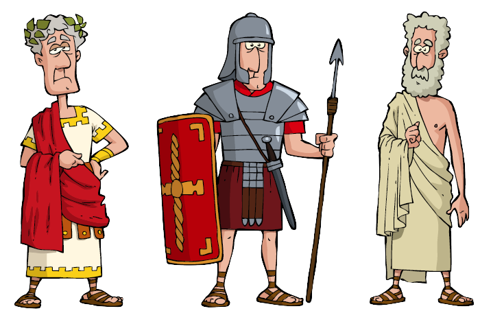

Join the time-traveling trio of iconic Roman figures on a fascinating journey! They've journeyed from the depths of history, and now, they're eager to explore Rome's modern marvels. Take part in their adventure by clicking on the interactive map below to uncover the secrets and stories of Rome's most prominent geographical gems and historical sites.
